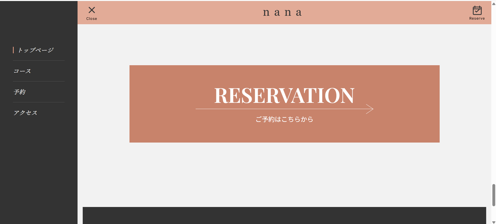

WORKS
制作物一覧
lightbulb このページについて
制作した作品をまとめて紹介するページです。各作品の概要・使用技術・工夫した点などを記載しましょう。
メイン制作物
作品名 必須
香水ワークショップ「nana」
作品概要 必須
どんなサービス・サイトか、ターゲットユーザーは誰か
香水ワークショップサイト「nana」を制作。20〜40代女性やカップルをターゲットに、ミニマルで上品な世界観を重視したデザインを設計。サイドバーによる導線設計と予約機能を実装し、体験価値を直感的に伝える構成を意識して2か月で開発。
使用技術 必須
フロントエンド：HTML / CSS / JavaScript
バックエンド：Java / Spring Boot / MyBatis
データベース：MySQL
その他：Git / Figma
担当範囲 必須
企画・デザイン・フロントエンド・バックエンドなど
企画・デザイン・フロントエンドの開発
工夫した点・アピールポイント 必須
本アプリでは、ユーザーが迷わず予約まで進めることを重視し、デザインの統一と導線設計に注力しました。フォントやカラー、余白のルールを整理し一貫性を持たせるとともに、既存コードを壊さないよう最小差分で実装しました。特に導線設計に苦労しましたが、サイドバーやヘッダーを固定することで、どの位置からでも予約へ移動できるUIに改善しました。
スクリーンショット 必須
作品のスクリーンショットを貼り付け

リンク 任意
デモサイト： https://202510-awtomizawa.github.io/nana_1/
GitHubリポジトリ：https://github.com/202510-awtomizawa/nana_1